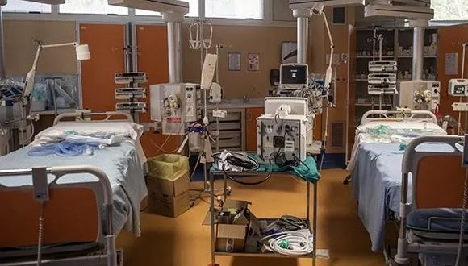

意大利封城令提前泄露：民众“大逃亡”，警察医护火车站蹲守|界面新闻 · 天下
原文链接 备份链接 图片来源：半岛电视台 记者 | 安晶 “我正在中世纪城市帕多瓦吃晚饭时，短信和电话蜂拥而至：最后一趟火车晚上11点31分出发，在军队封路之前赶回罗马。‘法令午夜就生效了，快点！’” 美联社记者托马斯（Trisha …

图片来源：半岛电视台
记者 | 安晶
“一代人在短短两周里就没了，我们从没见过这样的事。”
从3月1日至今，意大利贝加莫省最大的丧葬公司CFB已经处理了600多具遗体。CFB负责人里卡多（Antonio Ricciardi）在接受《卫报》采访时透露，公司平时一个月的工作量约120具。
自新冠肺炎疫情爆发以来，该国北部伦巴第大区贝加莫市居民对当地一份报纸的讣告版做了一个统计：2月9日，讣告版占了一页；到3月13日，讣告版已经扩充到10页。
由于病亡人数激增，当地丧葬公司无力应对，3月18日晚，15辆军车被派往贝加莫市，将约65尊棺材运到贝加莫之外的12个镇进行遗体火化。
大部分逝者都没有葬礼。为避免疫情扩散，意大利当局已经禁止了包括葬礼、婚礼在内的仪式。本周，威尼斯等地的两名神父因主持葬礼遭到起诉。
一名医生在接受路透社采访时指出，新冠确诊患者接受治疗期间，家属不能前往医院探视。患者去世后，由医院电话通知家属，遗体则直接封棺，在没有亲属在场的情形下土葬或者火葬。
即便如此，里卡多表示，他所在的丧葬公司也有很多员工感染，已经没有足够的人手运送遗体。
贝加莫市一名老师还透露，本周，一名88岁的老人发烧数日后在家中去世。由于急救电话一直占线，老人直到去世都没能联系上救护人员。
老人去世一小时后，救护车赶到现场。但由于贝加莫已经没有棺材可用，急救人员只能将老人的遗体留在屋内并封锁房间以防止亲属入内。直到找到棺材，老人的遗体才能得到安葬。

运送棺材的军车。图片来源：Twitter
看到运送棺材的军车从路上开过，贝加莫市居民扎尼朗尼（Roberta Zaninoni）在接受《华尔街日报》采访时庆幸，自己的父亲不在车上。
扎尼朗尼的父亲于10日因感染新冠病毒病逝，病逝两天前才住进医院。
“我们小看了这个病。我一直在想当初应该做更多准备，防止父亲感染。我希望其他国家的民众不要犯我们犯过的错，把你们的父母锁在家里，不要让他们出门。”
贝加莫市所在的贝加莫省有约110万人口，为意大利的富裕省份。但在此次疫情中，该省成为重灾区，累计确诊4305例。
截至3月19日，意大利累计确诊41035例，死亡3405例。意大利也超过中国，成为全球死亡病例最多的国家，死亡率高达8%。
对于高死亡率，意大利卫生部长顾问里奇亚蒂（Walter Ricciardi）认为，老年人口居多是主要原因之一，意大利是世界老龄化第二严重国家。
意大利有6048万人口。据意大利统计局的数据，2018年，该国有近60%人口在40岁及以上，近23%在65岁以上，年龄中位数为45岁。
《美国医学会杂志》17日发表的统计显示，在意大利的新冠确诊病例中，有37.6%为70岁以上，37.3%为51岁到70岁。意大利国立卫生研究院统计显示，在新冠死亡病例中有87%的患者在70岁以上。

3月15日数据。图片来源：美国医学会杂志
里奇亚蒂表示，意大利各医院收治的新冠患者中，年龄中位数为67岁，而大部分死亡患者都有一到三种基础疾病。除人口老龄化之外，研究人员也指出，由于接受病毒检测的大部分为在医院治疗的患者，还有大量感染者没有被检测出来，因此死亡率高企。
当大量高龄患者涌入医院时，重症监护设备就变得更为关键。伦巴第大区是意大利确诊病例最多的大区，有近2万确诊病例，其中2168例死亡。
意大利卫生部周四公布的数据显示，伦巴第大区的重症监护床位已经占用了94%，即将无床位可用。

ICU床位占用率。图片来源：意大利卫生部
《华尔街日报》报道则指出，在疫情前，伦巴第大区各医院的重症监护区共有约900个床位，但目前该区有924名新冠患者在重症监护区接受治疗。医院只能腾出一切可用空间，紧急加设病床。
由于医疗资源有限，哪些患者应该优先接受治疗，成为了医生被迫面对的选择。意大利麻醉、镇痛、复苏和重症监护学院发布的指南中建议，在资源短缺的情况下，应该让“最有可能救治成功和存活的患者”使用重症监护设备。
一名罗马的医生在接受NPR采访时举例称：“如果你有一名99岁、患多种疾病的患者，还有一名需要插管的年轻小孩，但你只有一个呼吸器。你不需要扔硬币来决定该选谁。”
有研究人员推测，这种选择也是意大利死亡病例升高的原因之一。
随着医院接收的患者增多，被感染的医护人员也越来越多。
伦巴第大区克雷莫纳省一家小型医院的医生在接受路透社采访时透露，该医院的医护人员感染率已经达到20%。
意大利循证医学组织本周发布的报告显示，从2月疫情爆发至今，意大利已经有至少2629名医护人员感染新冠病毒。由于防护用品短缺，部分医生只能佩戴普通外科手术口罩。
周四，伦巴第大区科莫镇有两名医生去世。至此，意大利至少有13名医护人员死于新冠病毒感染。
为加大对医疗机构的支持，意大利政府周一宣布紧急法令，为医疗卫生系统提供35亿欧元资金，用于扩大重症监护区、购买呼吸机和防护设备，同时招募5000名医生和1.5万名护士及医务人员，包括尚未毕业的医学生。
本周，已有2200名医生和护士向伦巴第大区各医院提交了求职申请，其中一半正在评估中。
然而就算有新的医护人员加入，意大利还将继续面对医用物资短缺的问题。
意大利紧急民防部门预计，该国目前每月需要9000万个口罩。意大利本国不生产口罩，进口是唯一途径。
民防部长博雷利（Angelo Borrelli）表示，意大利已经就购买5500万个口罩签署了协议，但由于多国禁止口罩出口，其中有2000万个将永远无法到货。上周，中国的九名医疗专家和31吨医疗物资已经抵达意大利。
意大利总理孔特则宣布，政府将继续延长关闭学校和商店的紧急措施。此前的法令要求全国学校关闭至4月3日，大部分商店关闭至3月25日。
孔特还警告，如有必要，政府将继续加强隔离措施，进一步限制民众出行。
各地区政府官员已经呼吁禁止民众出门进行户外活动，并关闭所有公园。上周末，代利亚市市长班凯里在社交媒体发布视频，用“咆哮体”呼吁市民不要再每天出门买烟、给车加油、跑步或者周末聚会烧烤。
本周，意大利有4.3万人因“无合理原因外出”收到了警方的罚单。
未经授权 禁止转载

原文链接 备份链接 图片来源：半岛电视台 记者 | 安晶 “我正在中世纪城市帕多瓦吃晚饭时，短信和电话蜂拥而至：最后一趟火车晚上11点31分出发，在军队封路之前赶回罗马。‘法令午夜就生效了，快点！’” 美联社记者托马斯（Trisha …
原文链接 备份链接 根据当地时间3月8日18时意大利卫生部公布的最新数据，意大利现有新冠病毒患者6387例，死亡366例，治愈622例，累计确诊感染新冠病毒总人数为7375例，较3月7日18时新增1492例，新增133例死亡病例。 据外 …
原文链接 备份链接 2月16日，四川省人民医院ICU主任黄晓波（中）在武汉红十字会医院7楼临时ICU病房里查看一位新冠肺炎危重症患者的病情 图/陈卓 全文共11346字，阅读大约需要24分钟。 令人揪心的数字每天都在跌落，但目前湖北仍 …
原文链接 备份链接 3月15日，在湖北省中医院花园山院区，患者有序排队就诊。随着花园山院区新冠病人清零，经过严格的消杀处理后，陆续恢复普通门诊。新华社记者 沈伯韩 摄 本文约2252字 预计阅读时6分钟 作者 | 中青报·中青网记者 王景 …
原文链接 备份链接 原本今天不打算写日记的，因为我感觉有点疲劳，不是身体上的疲劳，是精神上的。大概从武汉开始封城或许甚至更早吧，新冠肺炎这件事一直占据着我每天所有的空余时间，各种景象和讯息塞爆了头脑，我感觉对它开始产生厌倦了。现在夜深了， …